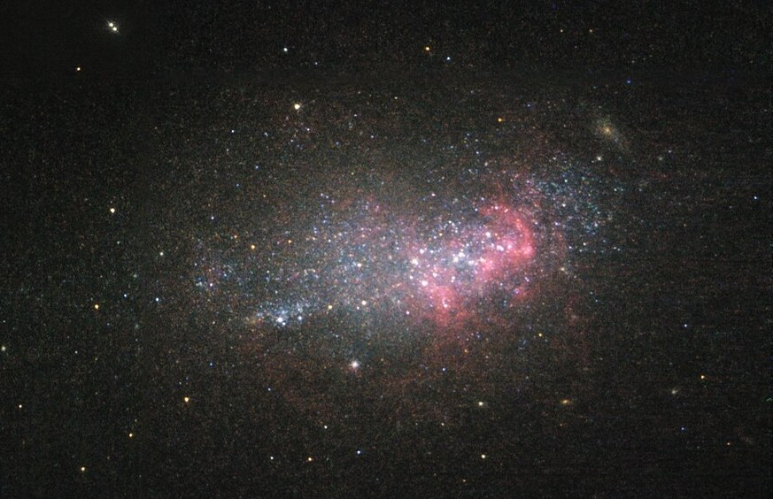
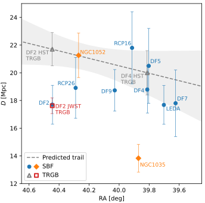
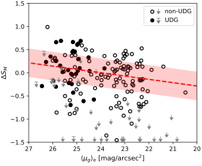
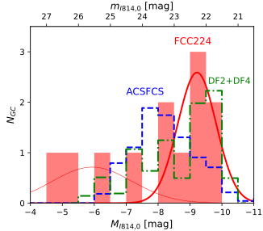
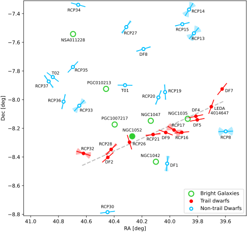
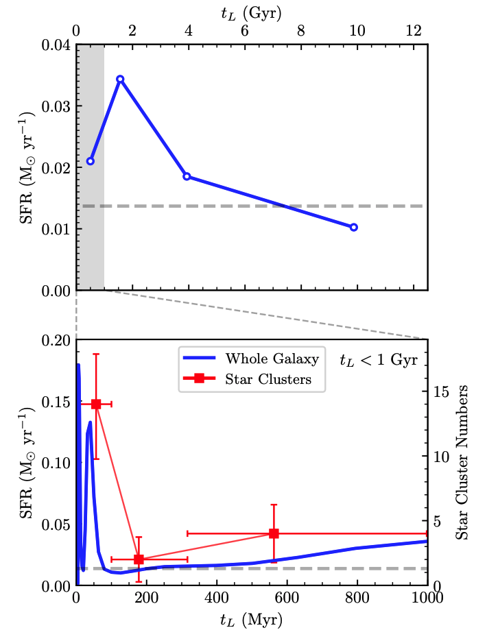
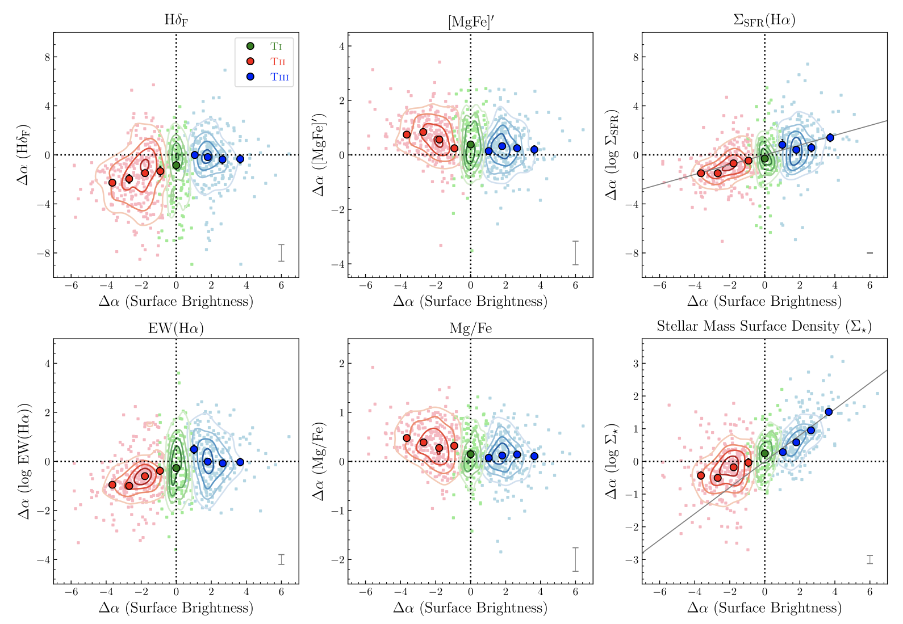

Research
I have a broad interest in galaxy formation and evolution. Currently I am focusing on dwarf galaxies in the nearby universe and on their globular cluster systems, using deep multi-wavelength imaging together with integral-field and multi-object spectroscopy.

How Far Away Are the “Trail” Dwarfs in the NGC 1052 Group?
The dark matter deficient galaxies NGC 1052-DF2, DF4 and DF9 lie along a striking linear trail of dwarf galaxies, which may be the debris of a high-speed head-on collision between two gas-rich dwarfs (the “bullet dwarf” scenario, see below). A natural worry is that the trail is not a real structure at all, but a chance superposition with the foreground NGC 1035 group at ~13 Mpc. Using Hubble Space Telescope imaging, I measured surface brightness fluctuation (SBF) distances for eight candidate trail dwarfs and for the giants NGC 1052 and NGC 1035. All of the dwarfs sit at ~20 Mpc and are therefore not members of the foreground group, which supports the reality of the trail. One tension remains: for DF2 the SBF distance is 17.7 ± 1.4 Mpc, in conflict with the published HST tip-of-the-red-giant-branch (TRGB) distance of 21.7 ± 1.2 Mpc, but in good agreement with a new and potentially more accurate JWST TRGB distance of 17.6 ± 0.6 Mpc. Uniform JWST imaging of the remaining trail dwarfs is now the critical next step.
Related publication:
– New Measurements of Distances to Trail Dwarfs in the NGC 1052 Galaxy Group
Yimeng Tang, Gagandeep S. Anand, Aaron J. Romanowsky, et al. 2026, ApJL, 1005, L16


Dwarf Galaxies and Their Globular Clusters in the Perseus Cluster
Globular clusters (GCs) are useful tracers of the early assembly of their host dwarfs, but large samples with both deep imaging and spectroscopy have been rare. I carried out a systematic study of 189 dwarf galaxies and their GC systems in the Perseus cluster, combining deep Subaru Hyper Suprime-Cam imaging with Keck spectroscopy and literature data. This is the largest sample of dwarfs in a single cluster to date with simultaneous deep imaging, spectroscopic coverage and GC measurements, and it spans a broad, continuous range of galaxy properties. As in other clusters, the GC specific mass anti-correlates with galaxy stellar mass; at fixed stellar mass, dwarfs with lower surface brightness or larger effective radius tend to be more GC-rich, suggesting either efficient GC formation in an earlier, more compact phase or less efficient GC disruption afterwards. The dependence of GC richness on axis ratio is weaker than in other environments, and the link with cluster infall time is much less clear than what is seen in Virgo, Coma and cosmological simulations — hinting at genuine cluster-to-cluster variations that upcoming wide-field surveys and further theoretical modeling will need to explain.
Related publication:
– Connection Between Dwarf Galaxies and Globular Clusters: Insights from the Perseus Cluster Using Subaru Imaging and Keck Spectroscopy
Yimeng Tang, Aaron J. Romanowsky, Song Huang, et al. 2026, ApJ, 998, 254


Unusual Globular Cluster System in the Ultra-diffuse Galaxy FCC 224
FCC 224 is a quiescent ultra-diffuse galaxy in the Fornax cluster whose globular cluster (GC) system looked peculiar already in shallow imaging. With new Hubble Space Telescope data I measured a surface brightness fluctuation distance of 18.6 ± 2.7 Mpc, consistent with membership in Fornax, and used Prospector to fit multi-wavelength photometry (HST, ground-based, WISE) together with Keck Cosmic Web Imager spectroscopy. The galaxy is old (mass-weighted age ~10 Gyr), metal-poor ([M/H] ~ −1.25 dex) and formed on a very short timescale (τ ~ 0.3 Gyr). Its 12 candidate GCs have remarkably homogeneous g475 − I814 colors, only 0.04 mag bluer than the diffuse starlight, reinforcing a single-burst formation picture. The GC luminosity function is top-heavy, much like that of the dark matter deficient galaxies NGC 1052-DF2 and DF4, yet FCC 224 differs from them in having unusually compact GCs (~3 pc, some 35% smaller than typical for dwarfs) and radial mass segregation in its GC system. No single formation scenario currently accounts for all of these properties, which makes a direct measurement of the dark matter content of FCC 224 especially valuable.
Related publications:
– An Unexplained Origin for the Unusual Globular Cluster System in the Ultra-diffuse Galaxy FCC 224
Yimeng Tang, Aaron J. Romanowsky, Jonah S. Gannon, et al. 2025, ApJ, 982, 1
– A New Class of Dark Matter-Free Dwarf Galaxies? I. Clues from FCC 224, NGC 1052-DF2 and NGC 1052-DF4
Maria Luísa Buzzo, Duncan A. Forbes, Aaron J. Romanowsky, et al. (including Y. Tang) 2025, A&A, 695, A124


Beyond DM-free Galaxies NGC 1052-DF2 and DF4: Testing the Bullet Dwarf Collision Scenario
NGC 1052-DF2 and DF4 are two ultra-diffuse galaxies reported to be deficient in dark matter and associated with the same group. Both appear to belong to a large linear substructure of dwarf galaxies that may have formed in a high-velocity head-on encounter of two gas-rich galaxies — a “bullet dwarf” collision. Using new Hubble Space Telescope observations together with existing imaging from the u band to the mid-infrared, I tested this scenario through the morphologies and stellar populations of the trail dwarfs. Morphologically the trail dwarfs are not distinguishable from other dwarfs in the group, although in both populations the photometric major axes align unexpectedly with the trail. Their stellar populations, however, are clearly distinct: the trail dwarfs are significantly older and more metal-rich than the comparison sample, supporting the trail as a genuine structure. These measurements are strong constraints on any formation model, and are for now best explained by the bullet dwarf collision.
Related publication:
– Testing the Bullet Dwarf Collision Scenario in the NGC 1052 Group Through Morphologies and Stellar Populations
Yimeng Tang, Aaron J. Romanowsky, Pieter G. van Dokkum, et al. 2025, ApJ, 978, 21


Unveiling the Formation of NGC 2915 with MUSE
NGC 2915 is a nearby galaxy that looks like an isolated blue compact dwarf in the optical, yet is surrounded by an extremely extended H I disk with prominent Sd-type spiral arms. To understand what triggers its starburst, I analyzed deep VLT/MUSE integral-field spectroscopy covering the star-forming region in the central kiloparsec. Bursty star formation has recurred at different locations across the central region, with the most recent episode peaking around 50 Myr ago; it has strongly disturbed the kinematics of the ionized gas but not those of the neutral atomic gas, implying that the two phases are largely decoupled along the line of sight. Standard line-ratio diagnostics show no sign of an active galactic nucleus. The ionized gas metallicity rises outward — a positive radial gradient — which likely reflects both feedback-driven outflows and the infall of metal-poor gas; high-speed collisions between gas clouds of different metallicity, localized metallicity drops, and unusually small gas–star metallicity differences all point the same way. Finally, the central stellar disk counter-rotates with respect to the extended H I disk, indicating that the recent bursts have been fueled by externally accreted gas.
Related publication:
– Unveiling the Formation of NGC 2915 with MUSE: A Counterrotating Stellar Disk Embedded in a Disordered Gaseous Environment
(reported on Phys.org)
Yimeng Tang, Bojun Tao, Hong-Xin Zhang, et al. 2022, A&A, 668, A179


Origin of Surface Brightness Profile Breaks of Disk Galaxies from MaNGA
Nearby disk galaxies commonly show breaks in their surface brightness profiles (SBPs), and their origin has been debated for decades. To address this, I compared the stellar population profiles of 635 disk galaxies from the MaNGA survey, classified as single exponential (Ti), down-bending (Tii) or up-bending (Tiii), and derived their spin parameters and radial profiles of age- and metallicity-sensitive spectral features. Most Tii (Tiii) galaxies also have down-bending (up-bending) star formation rate profiles, so abrupt radial changes in star formation intensity contribute to both break types; a comparison with simulations nevertheless indicates that stellar migration substantially weakens down-bending breaks in the stellar mass surface density. Break strengths of the SBPs correlate with those of the spectral features for Tii galaxies but not for Tiii galaxies, suggesting that migration is not the main driver of Tiii breaks. Neither galaxy spin nor asymmetry distinguishes the three types, arguing against a dominant role for recent environmental disturbance or satellite accretion. Splitting the sample by morphology, all three types follow nearly the same tight stellar mass–R25 relation, which makes an evolutionary sequence driven by migration alone (Tii → Ti → Tiii) highly unlikely.
Related publication:
– New Constraints on the Origin of Surface Brightness Profile Breaks of Disk Galaxies from MaNGA
Yimeng Tang, Qianhui Chen, Hong-Xin Zhang, et al. 2020, ApJ, 897, 79

